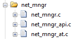
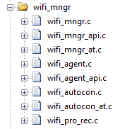

WI-FI
Descript of WI-FI manager & Network Manager & Auto-Connect
Network Manager
Network manager can handling wifi manager & auto-connect interactive behavior to let user only care about triggering WI-FI scan request and connect request.
Info
To see the usage example of Network Manager, can check in qd_app in examples\start_up\ folder.
The network manager initiation will also initialize the wifi manager and auto-connect. It's not necessary to initiate again in application
Initialize
Before using the network manager, please follow below steps to initiate.
Step 1. Enable network manager
#define WM_ENABLED (1)
#define NM_ENABLED (1)
#define AC_ENABLED (1)
The definition been defined in qd_config.h in sys_config folder.
Warning
WM_ENABLED and AC_ENABLED are both required if using network manager.
(The AC_ENABLED definition will be force to set as true while NM_ENABLED been set.)
Step 2. Add related files in Keil project

Step 3. Register callback and init
Add below program in app_main.c
void APP_NmUnsolicitedCallback(T_NmUslctdEvtType tEvtType, uint8_t *pu8Data, uint32_t u32DataLen)
{
// tEvtType refer to net_mngr_api.h
switch(tEvtType)
{
case NM_USLCTD_EVT_NETWORK_UP:
{
// wifi connected & got ip event
break;
}
case NM_USLCTD_EVT_NETWORK_DOWN:
{
// wifi disconnect event
break;
}
case NM_USLCTD_EVT_NETWORK_RESET:
{
// wifi reset event
break;
}
default:
{
// should not be here
break;
}
}
}
void APP_NetInit(void)
{
// Network manager initialize (auto-connect enable)
APP_NmInit(true, &APP_NmUnsolicitedCallback);
// user implement
}
The first parameter of APP_NmInit() is to enable/disable auto-connect at started.
- If set as true - the auto-connect will directly be funtional in sequence.
- If set as false - the auto-connect won't active.
Info
The APP_NetInit() function create by default in app_main.c,
it's for developer to fill the network related init function in it.
Unsolicited callback & Indicate callback
There're two types of callback function pointer can be assign to Network manager
- Unsolicited callback - Used for recving unsolicited events from network manager, will be called in network up (Wi-Fi connected & IP got)/ network down/ WI-FI reset.
Info
network up event represents to WI-FI connected and got dhcp ip
Unsolicited callback carried... Event, Result, Data & DataLens (Descript)
- Indicate callback - Used for getting solicited events of each request to send to network manager (such as scan_req).
Indicate callback carried... Result (Descript)
Info
Unsolicited callback & Indicate callback prototype located in nm_mngr_api.h
WI-FI Manager
WI-FI manager provide a easy way to control WI-FI.
Info
Network manager runs base on WI-FI manager, so if using the network manager the WI-FI manager will be directly initiate at network manager initiation.
Initialize
Before using the WI-FI manager, please follow below steps to initiate.
Step 1. Enable WI-FI manager
#define WM_ENABLED (1)
The definition been defined in qd_module.h in sys_config folder.
Step 2. Add related files in Keil project

Step 3. Register callback and init
Add below program in app_main.c
void APP_WmUnsolicitedCallback(T_WmUslctedEvtType tEvtType, T_OplErr tEvtRst, uint8_t *pu8Data, uint32_t u32DataLen)
{
// tEvtType refer to wifi_mngr_api.h
switch(tEvtType)
{
case USLCTED_CB_EVT_WIFI_UP:
{
// wifi connected event
break;
}
case USLCTED_CB_EVT_WIFI_DOWN:
{
// wifi disconnect event
break;
}
case USLCTED_CB_EVT_WIFI_RESET:
{
// wifi reset event
break;
}
case USLCTED_CB_EVT_GOT_IP:
{
// wifi got ip
break;
}
}
}
void APP_WifiInitDoneIndCallback(T_OplErr tEvtRst)
{
APP_SendMessage(APP_EVT_WIFI_INIT_DONE, (uint8_t*)&tEvtRst, sizeof(T_OplErr));
}
void APP_NetInit(void)
{
// register Wi-Fi unsolicited callback
if(OPL_OK != Opl_Wifi_Uslctd_CB_Reg(APP_WmUnsolicitedCallback))
{
OPL_LOG_ERRO(APP, "Wi-Fi unsolicited callback regist fail");
}
// Wi-Fi manager initialize
Opl_Wifi_Init_Req(APP_WifiInitDoneIndCallback);
// user implement
}
Info
The APP_NetInit() function create by default in app_main.c,
it's for developer to fill the network related init function in it.
Unsolicited callback & Indicate callback
There're two types of callback function pointer can be assign to WI-FI manager
- Unsolicited callback - Used for recving unsolicited events from WI-FI, will happens in WI-FI connected/ disconnected/ reset/ got ip.
Unsolicited callback carried... Event, Result, Data & DataLens (Descript)
- Indicate callback - Used for getting solicited events of each request to send to WI-FI manager (such as scan_req).
Indicate callback carried... Result (Descript)
Info
Unsolicited callback & Indicate callback prototype located in wifi_mngr_api.h
Auto-Connect
The auto-connect will do automatically connect to stored AP while the WI-FI connection offline, and will periodcially to retry till connected or been disable.
Initialize
Enable auto-connect and add related file into Keil project
#define WM_ENABLED (1)
#define AC_ENABLED (1)
Info
The auto-Connect will be init while initating WI-FI manager.
Usage
See in API reference
How To...
Network Manager
Network Manager provides mechanism to configure and monitor Wi-Fi networking. We strongly recommend applying Network Manager due to the Network Manager could make the process more robustly. Once the Network Manager initialize done, developer could start to perform the network process via Network Manager
How to perform Wi-Fi scan
- WI-FI scan request via Network Manager
T_OplErr APP_NmWifiScanReq(T_NmScanDoneIndCbFp fpIndCb)
Inside the callback fpIndCb, developer can send message to inform application that scan is done. After receiving, application can retrieve the scan result and trigger the following Wi-Fi connection operation.
- Retrieve WI-FI scan result
T_OplErr WM_WaScanListGet(wifi_scan_list_t *ptScanList)
This structure ptScanListdefines the list of scanned APs with their corresponding information.
How to perform Wi-Fi connection according to the scan result
- WI-FI connect via Network Manager
T_OplErr APP_NmWifiCnctReq(T_NmWifiCnctConfig *ptWmWifiCnctConfig, T_NmCnctIndCbFp fpIndCb)
Inside the callback fpIndCb, developer can send message to inform application that connect is done. Developer could receive unsolicited events from Network Manager, including connected/ disconnected/ reset/ got ip.
Configurate connect configuration ptWmWifiCnctConfig with scan result ptScanList
typedef struct S_NmWifiCnctConfig
{
uint8_t u8aBssid[WIFI_MAC_ADDRESS_LENGTH]; // The MAC address of the target AP.
uint8_t u8aSsid[WIFI_MAX_LENGTH_OF_SSID]; // The SSID of the target AP.
uint8_t u8SsidLen;
uint8_t u8aPwd[WIFI_LENGTH_PASSPHRASE]; // The password of the target AP.
uint8_t u8PwdLen; // The length of the password. If the length is 64, the password is regarded as PMK.
uint8_t u8Timeout; // Connect timeout
} T_NmWifiCnctConfig;
WI-FI Manager
It is not necessary to access Wi-Fi Manager if Network Manager is enabled. However, developer can disable Network Manager and apply Wi-Fi Manager to perform network process directly. Before performing any Wi-Fi operation, developer should trigger Wi-Fi initial first.
How to perform Wi-Fi initiate
- Wi-Fi initiate via Wi-Fi manager
T_OplErr Opl_Wifi_Init_Req(T_WaInitDoneIndCbFp fpIndCb)
Inside the callback fpIndCb, developer can send message to inform application that initiate is done. After receiving, application can trigger the following Wi-Fi operation.
Both user application and the auto-connect module might trigger Wi-Fi operation. The user application should turn off auto-connect module before trigger any Wi-Fi operation.
- WI-FI auto connect disable request
T_OplErr Opl_Wifi_AC_Disable_Req(bool blActDisconnect, T_AcDisableIndCbFp fpIndCb)
If blActDisconnect is true that disable auto-connect module.
Inside the callback fpIndCb, developer can send message to inform application Wi-Fi auto-connect disable done. Once user Wi-Fi operation completed, application can turn on auto-connect module again.
- WI-FI auto connect enable request
T_OplErr Opl_Wifi_AC_Enable_Req(T_AcEnableIndCbFp fpIndCb)
Inside the callback fpIndCb, developer can send message to inform application Wi-Fi auto-connect enable done.
How to perform Wi-Fi scan
- WI-FI scan request via Wi-Fi Manager
T_OplErr Opl_Wifi_Scan_Req(wifi_scan_config_t *ptWifiScanConfig, T_WaScanDoneIndCbFp fpIndCb)
Inside the callback fpIndCb, developer can send message to inform application that scan is done. After receiving, application can retrieve the scan result and trigger the following Wi-Fi connection operation.
Configurate scan configuration ptWifiScanConfig
typedef struct {
uint8_t *ssid; /**< SSID of AP */
uint8_t *bssid; /**< MAC address of AP, point to array[WIFI_MAC_ADDRESS_LENGTH] */
uint8_t channel; /**< channel, scan the specific channel */
bool show_hidden; /**< enable to scan AP whose SSID is hidden */
wifi_scan_type_t scan_type; /**< scan type, active or passive */
wifi_scan_time_t scan_time; /**< scan time per channel */
} wifi_scan_config_t;
The ssid and bssid could be empty if developer want to scan global APs.
- Retrieve WI-FI scan result
T_OplErr WM_WaScanListGet(wifi_scan_list_t *ptScanList)
This structure ptScanListdefines the list of scanned APs with their corresponding information.
How to perform Wi-Fi connect according to the scan result
- WI-FI connect request via WI-FI Manager
T_OplErr Opl_Wifi_Conn_Req(T_WmConnConfig *ptWifiConnConfig, T_WaConnectIndCbFp fpIndCb)
Inside the callback fpIndCb, developer can send message to inform application that connect is done. Developer could receive unsolicited events from Wi-Fi, including connected/ disconnected/ reset/ got ip.
Configurate connect configuration ptWifiConnConfig with scan result ptScanList
typedef struct S_WmConnConfig
{
uint8_t ssid[WIFI_MAX_LENGTH_OF_SSID]; // The SSID of the target AP.
uint8_t ssid_length; // The length of the SSID.
uint8_t bssid[WIFI_MAC_ADDRESS_LENGTH]; // The MAC address of the target AP.
uint8_t password[WIFI_LENGTH_PASSPHRASE]; // The password of the target AP.
uint8_t password_length; // The length of the password. If the length is 64, the password is regarded as PMK.
} __attribute__((packed)) T_WmConnConfig;